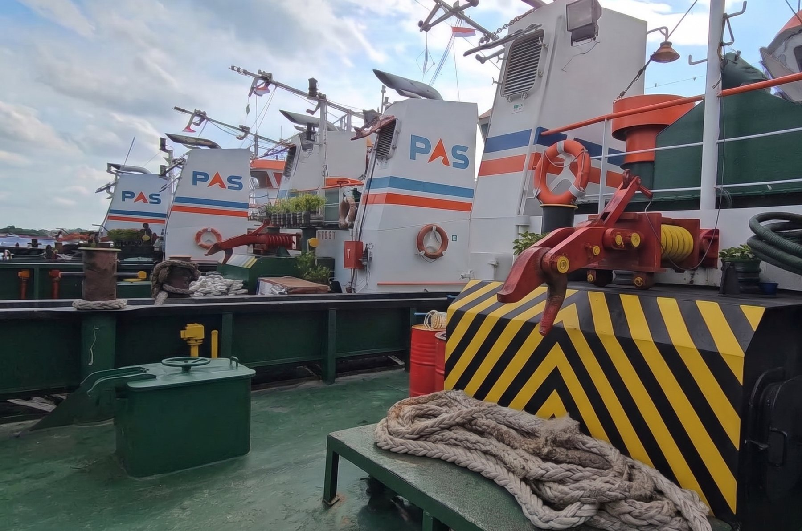
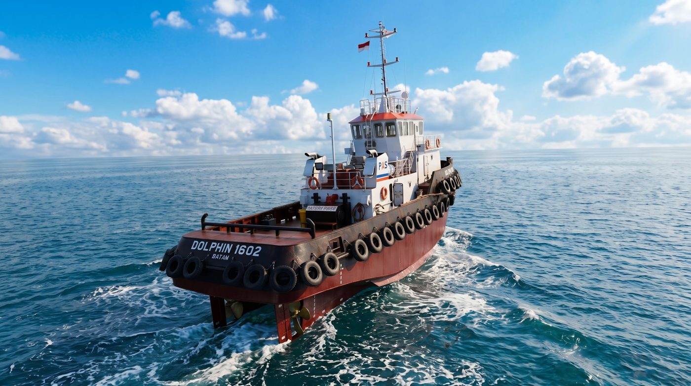
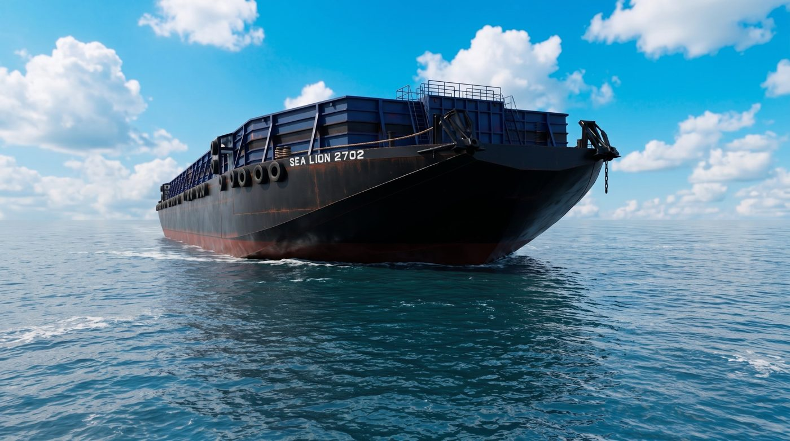
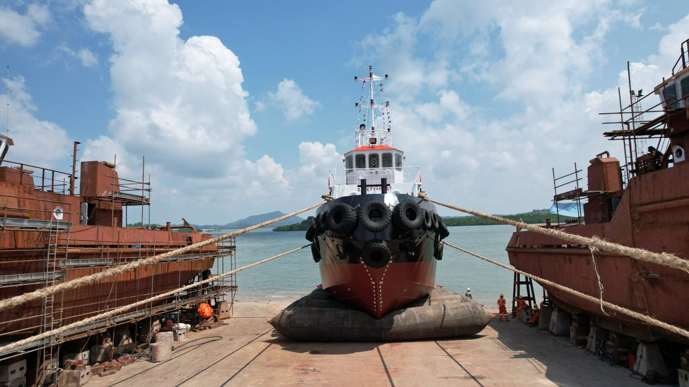
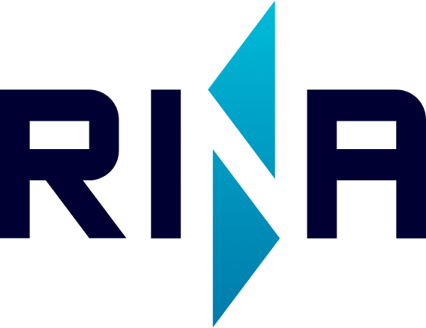
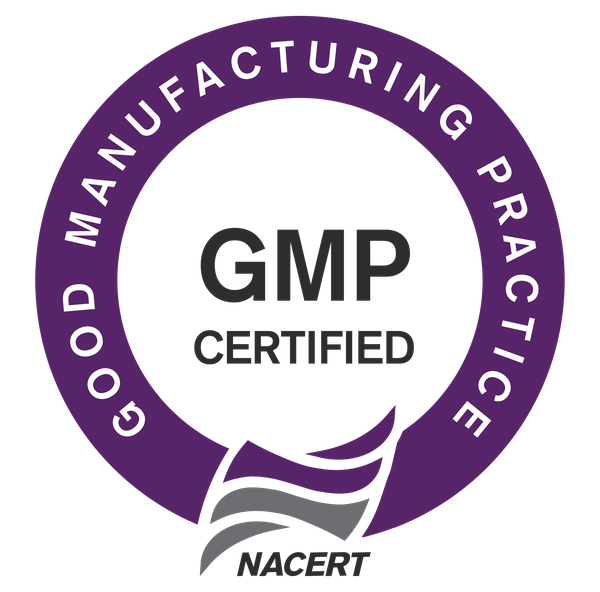
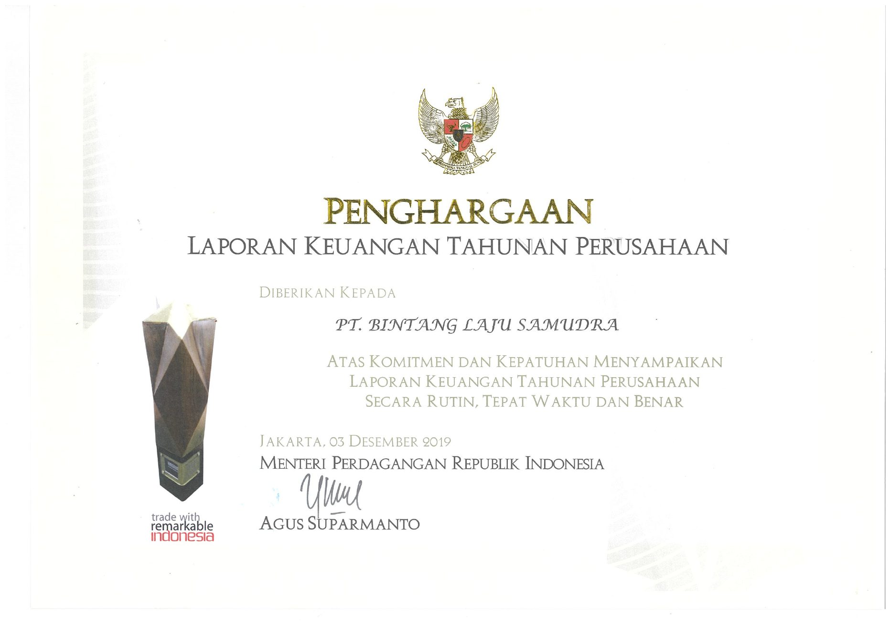
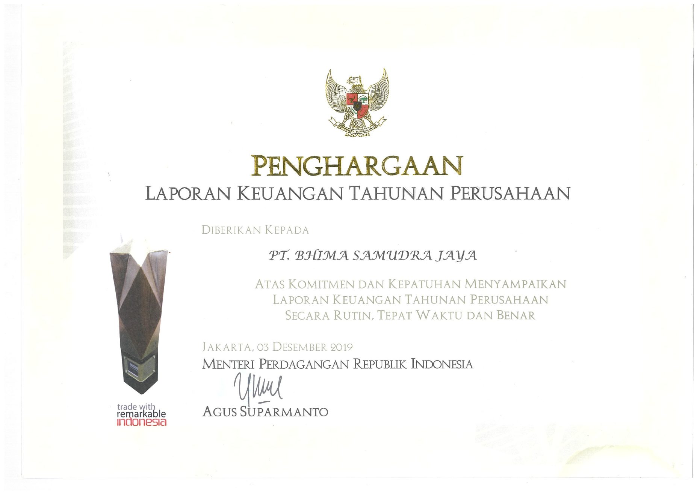
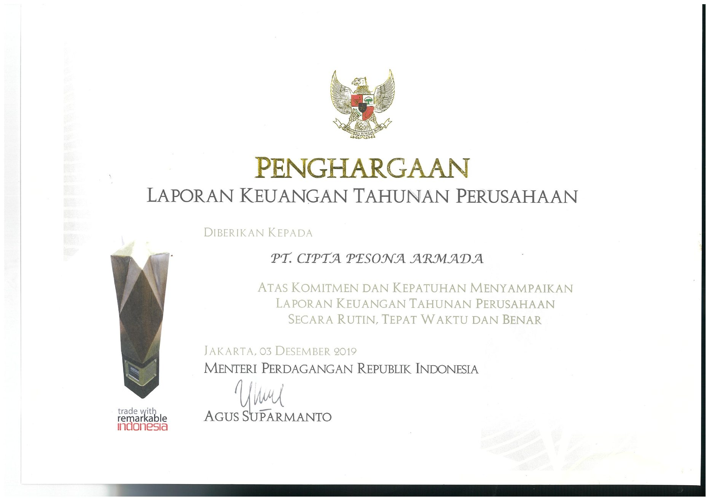
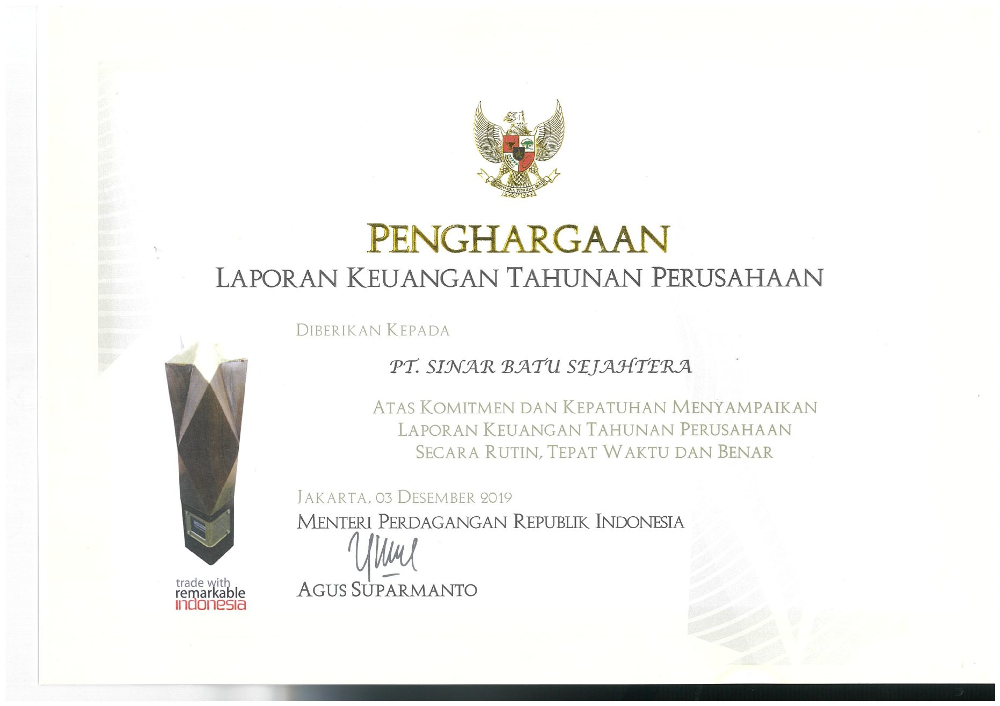

关于我们
PT Prima Armada Samudra 是一家印度尼西亚航运公司，使用拖轮和驳船从事国内海上运输。公司成立于 2004 年 3 月 30 日，总部位于中雅加达。
目前我们自有 64+ 套拖轮和驳船，另管理 15 套租入船舶。所有船舶均悬挂印度尼西亚国旗，并由 RINA、ClassNK 或 BKI 入级，船员均持有与职务相符的证书。
我们承担客户业务中的海上物流环节，让客户专注于核心业务。我们保持沟通畅通，使合作关系长期互惠共赢。
我们相信员工是公司最重要的资产。我们定期开展船员培训，并保持安全的工作环境，使我们的海事标准始终保持最新。

我们的历程与里程碑
从 2004 年在雅加达成立，到 2026 年将业务拓展至马辰，了解 PT Prima Armada Samudra 如何稳步壮大其拖轮和驳船船队。
22 年稳步成长
持续投资于可靠的海上物流。


PT Prima Armada Samudra 于 2004 年 3 月 30 日在雅加达成立。初始船队（含 2004 年前建造的船舶）：
成立五年后的船队，运力实现快速的初步扩张：
运营十年，主要航线的船舶供应能力大幅提升：
2024 年的船队，包括四艘新的 26 米拖轮，以提升拖带能力：
我们在马辰开设了新办事处，以支持巴里托河沿线的装货作业。现有船队：
愿景与使命
成为一家以准时、安全和可靠著称、值得信赖的印度尼西亚拖轮驳船公司。
通过安全合规、专业人才、计划性坞修和更快的维修周期，我们为客户和利益相关方提供可靠的服务与价值。

法律合规
通过保持高标准的安全与环境管理，我们致力于满足客户期望。我们致力于为员工提供安全的工作环境，保护公众与环境，将事故控制在合理可行的最低水平。

RINA
GMP 认证荣誉
由印度尼西亚共和国贸易部长于 2019 年 12 月 3 日颁发给本集团旗下公司，以表彰其定期、按时、准确提交年度财务报告的承诺与合规表现。




点击证书可放大查看。